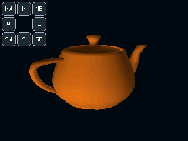

UTAH TEAPOT · SOFTWARE RENDERER
Ein Klassiker.
Auf deinem ESP32.
3D-Rendering, Licht und acht Touch-Tasten. Installiere MiniMesa32 direkt über USB – ohne Arduino IDE.

ESP32 Firmware installieren
Version wird geladen …Unterstützt: klassischer ESP32 / ESP32-WROOM-32 mit 4 MB Flash und der Projekt-Verdrahtung. Nicht für ESP32-S2, S3, C3 oder andere Chipfamilien.
- ESP32 mit einem USB-Datenkabel anschließen.
- Auf Install klicken.
- Den seriellen Port des ESP32 auswählen.
- Installation bestätigen und den Flash-Vorgang abwarten.
Empfohlen: aktuelles Chrome oder Edge auf einem Desktop-PC. Web Serial benötigt HTTPS (lokal auch localhost). Seriellen Monitor und andere Programme schließen, die den Port belegen.
Installer wird geladen …
Was läuft auf dem Board?
Ein kleiner OpenGL-artiger Renderer mit Z-Puffer, RGB565 und 1.024 Dreiecken. Acht Richtungstasten drehen die Teekanne in 45°-Schritten. Das ausgesparte Tastenfeld bleibt flackerfrei.
Board: esp32:esp32:esp32
Build: siehe Build-Metadaten
Verbindung klappt nicht?
Anderes Datenkabel oder USB-Port versuchen. Bei Bedarf den passenden USB-UART-Treiber für dein Board installieren. Falls der Bootloader nicht startet: BOOT gedrückt halten, Verbindung erneut starten und nach dem Verbindungsaufbau loslassen.
Alternative: Arduino CLI / manuelles Flashen. Nach der Installation startet die Animation automatisch.